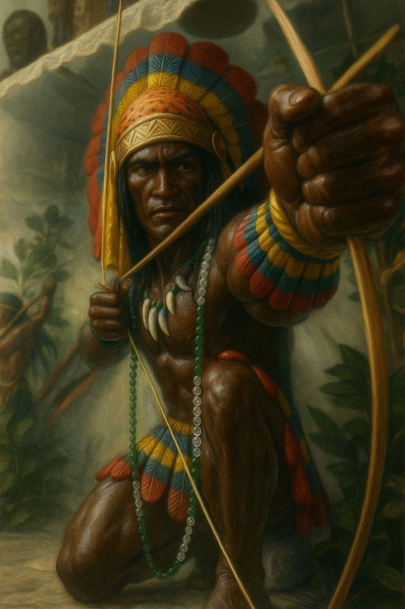
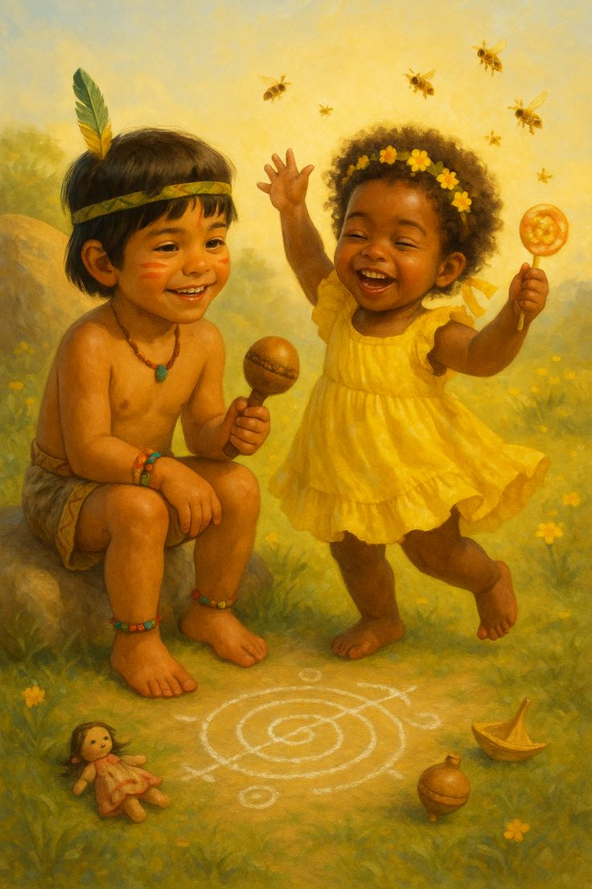
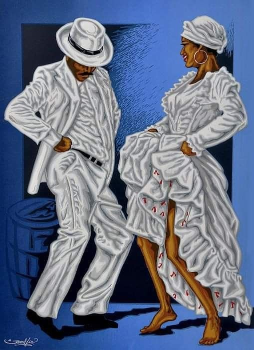
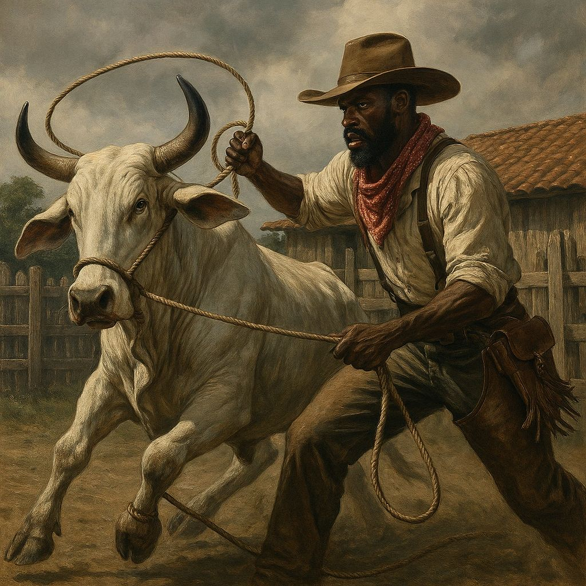
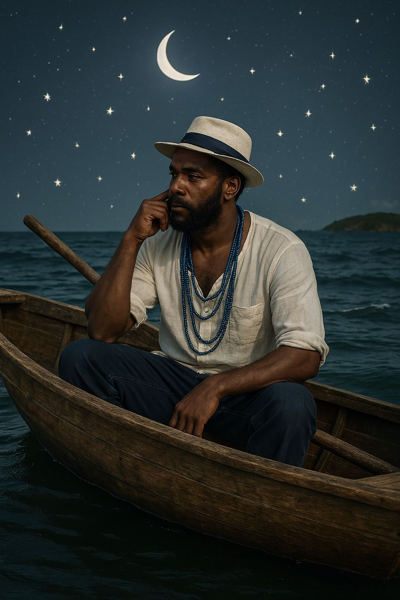
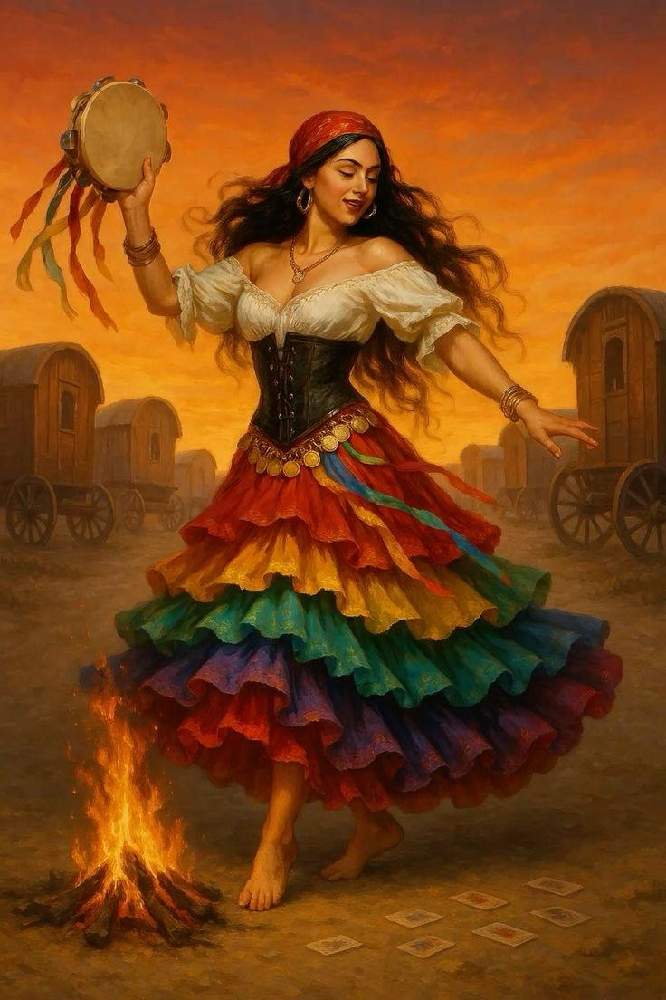
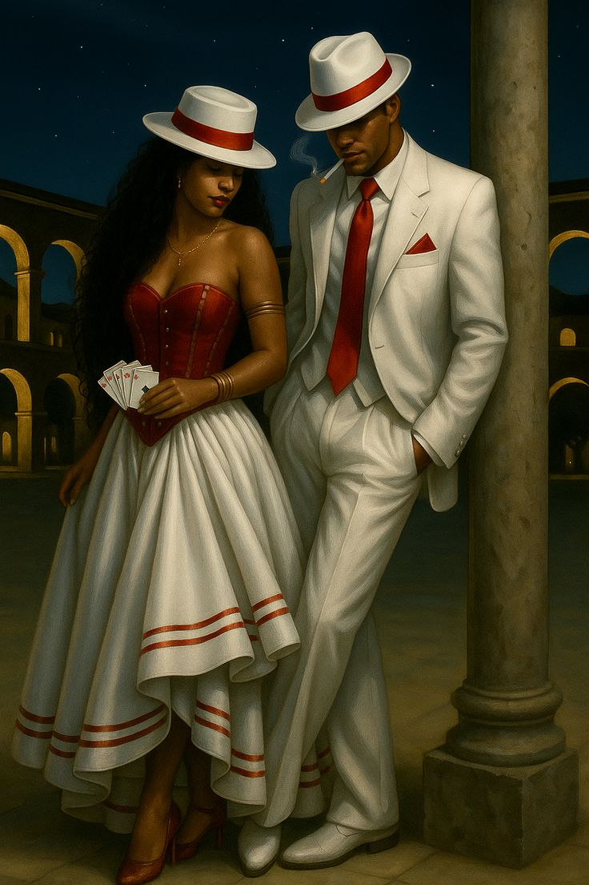
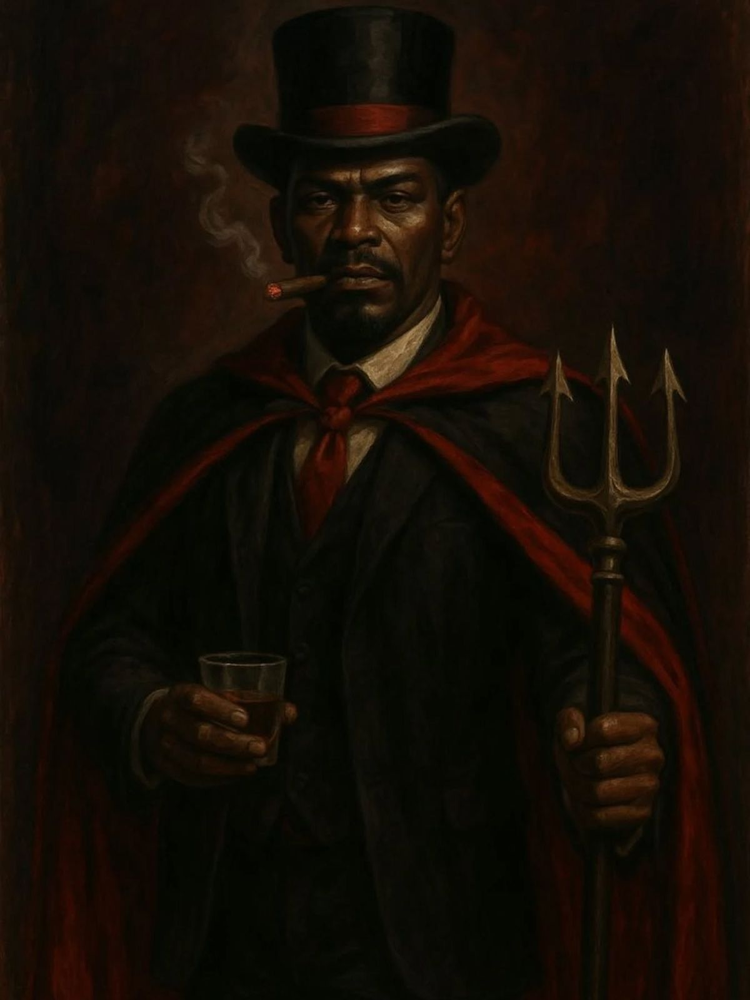
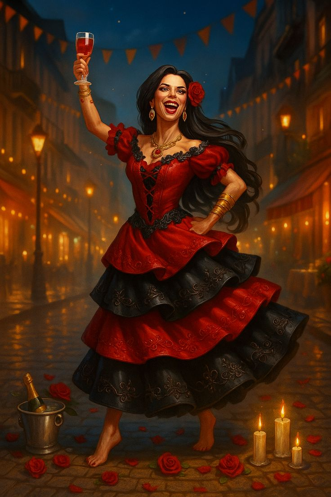

VEJA UM POUCO SOBRE OS GUIAS ESPIRITUAIS
Caboclos

Os caboclos são guias ligados à força da natureza, especialmente às matas. Representam sabedoria, coragem, disciplina e espiritualidade elevada. Atuam aconselhando, orientando e fortalecendo as pessoas, sempre com firmeza e respeito.
Veja mais sobre a linha dos CaboclosPretos Velhos

Os pretos-velhos representam a humildade, a paciência e a sabedoria adquirida com o tempo. Suas orientações são simples, porém profundas, voltadas para o perdão, o amor ao próximo e a evolução espiritual. São símbolos de resistência e fé.
Veja mais sobre a linha dos Pretos VelhosEres

Os erês são guias que manifestam a energia da infância, da pureza e da alegria. Eles trabalham com leveza, sinceridade e simplicidade, ajudando na cura emocional e no equilíbrio espiritual. Representam a inocência e a esperança.
Veja mais sobre a linha dos ErêsBaianos

Os baianos são guias ligados à força do povo, à alegria e à superação das dificuldades. Trabalham com energia firme, linguagem direta e muita determinação. Representam coragem, persistência e luta diária.
Veja mais sobre a linha dos BaianosBoiadeiros

Os boiadeiros são guias associados aos campos, estradas e à condução. Representam liderança, proteção e firmeza. Trabalham abrindo caminhos, afastando energias negativas e trazendo equilíbrio espiritual.
Veja mais sobre a linha dos BoiadeirosMarinheiros

Os marinheiros estão ligados ao mar e às águas profundas. Representam adaptação, resistência e equilíbrio emocional. Trabalham ajudando pessoas em momentos de instabilidade, trazendo calma e orientação.
Veja mais sobre a linha dos MarinheirosCiganos

Os ciganos são guias ligados à liberdade, ao conhecimento e à espiritualidade universal. Trabalham com orientação, intuição e equilíbrio energético. Representam movimento, aprendizado e evolução.
Veja mais sobre a linha dos CiganosMalandros

Os malandros são guias ligados à inteligência, à esperteza e à sobrevivência urbana. Trabalham ajudando a sair de situações difíceis com sabedoria e estratégia, sempre ensinando responsabilidade e consciência.
Veja mais sobre a linha dos MalandrosExu

Exu é guia mensageiro e guardião dos caminhos. Atua na organização, na comunicação e na proteção espiritual. Não representa o mal, mas sim o equilíbrio, a justiça e o movimento necessário para a evolução.
Veja mais sobre a linha dos ExusPombagira

As pombagiras são guias ligadas à força feminina, à autoestima e ao amor-próprio. Trabalham questões emocionais, relacionamentos e equilíbrio interior, sempre com firmeza e consciência.
Veja mais sobre a linha das PombagirasExu Mirim

Os exus mirins representam aprendizado, movimento e transformação. Trabalham com energia jovem, ajudando no desenvolvimento espiritual e na correção de atitudes, sempre sob a lei e a ordem da Umbanda.
Veja mais sobre a linha dos Exus MirimPombagira Mirim

As pombagiras mirins atuam na orientação emocional e no amadurecimento espiritual. Trabalham de forma educativa, ajudando no entendimento dos sentimentos e no crescimento interior.
Veja mais sobre a linha das Pombagiras Mirim